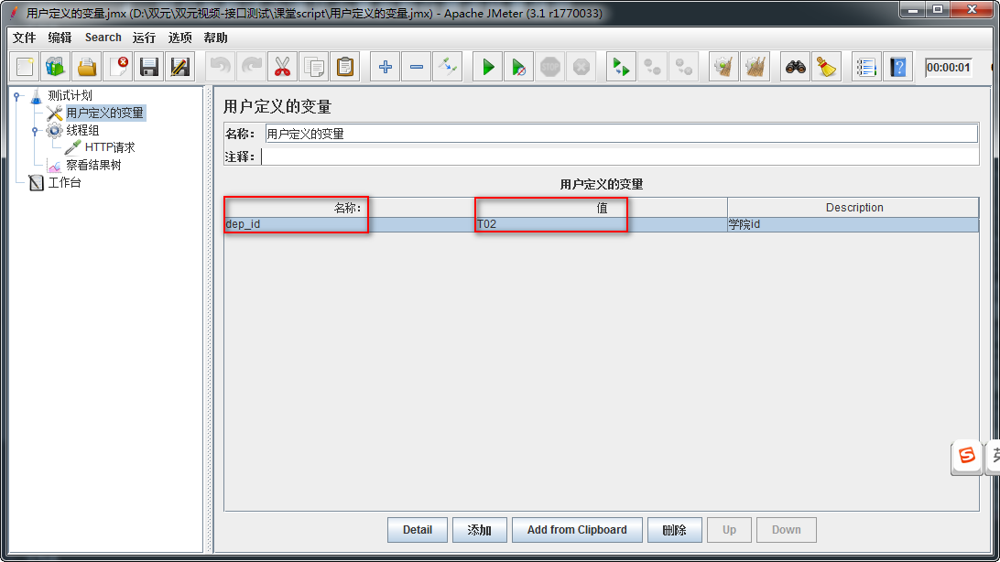

Jmeter 参数化
目标
- 学习掌握Jmeter中常用参数化方式
1. 为什么要参数化？
1.1 需求新增10条数据
学院-新增
1) 请求方法：POST
2) 请求地址：http://127.0.0.1:8000/api/departments/
3) 请求JOSN报文：
4) 调用传入的json串如下（可新增多条，之间用,隔开）：
{
"data": [
{
"dep_id": "T01",
"dep_name": "Test学院",
"master_name": "Test-Master",
"slogan": "Here is Slogan"
}
]
}
问题:
1. 键所对应的值都是写死的，只能手动更改
2. 无法解决新增大数量（1000条）的问题
2. 什么是参数化？
概念：根据需求动态获取数据并进行赋值的过程
在Jmeter中参数化常用方式：
CSV Data Set Config
用户参数
用户定义的变量
函数
1. CSV Data Set Config（数据集配置）
概念：一种从外部读取数据功能的组件
1.1 实施方案分析
1. 基于测试计划->线程组
2. 基于线程组->配置元件->CSV Data Set Config
3. 基于线程组->Sampler->HTTP请求
4. 基于测试计划->HTTP信息头管理器
5. 基于测试计划->监听器->察看结果树
1.2 组件要点分析
1. 线程组:循环次数10
2. CSV Data Set Config 读取变量配置
3. HTTP请求：Body Data填写(JSON报文) 方法(POST)
4. 参数化引用格式：${参数名} 如：${dep_id}
5. HTTP信息头管理器：Content-Type:application/json;charset=utf-8
1.3 CSV Data Set Config 参数配置图
1. Filename:文件路径+文件名+后缀名 如：d:/a.txt;
2. File Encoding:文件编译字符编码，一般设置utf-8;
3. Vaiable Names:读取参数后保存的变量名称;
4. Delimiter:如文件中使用的是逗号分隔，则填写逗号；如使用的是TAB，则填写\t;
1.4 HTTP信息头管理器 参数配置图
作用
告诉服务器请求的数据格式
1. Content-Type:指定请求信息格式-类型名称
2. application/json:指定请求信息为-JSON格式
3. charset=utf-8:字符编码
1.5 CSV Data Set Config-总结：
1. 参数化概念
2. CSV Data Set Config 配置参数设置
3. 参数化引用格式
4. HTTP请求
5. HTTP信息头管理器作用与设置
2. 用户参数
一种参数设置方式，用户可设置参数名称以及参数值;
我们使用用户参数作为参数化方式对学院新增10条记录问题进行实现
2.1 解决方案实施分析
1. 位置：测试计划-->线程组-->前置处理器-->用户参数
2. 其他组件和CSV Data Set Config实现新增10个学院相同，去除 CSV Data Set Config组件
2.2 组件要点分析
1. 线程组:注意是【线程数】为10
2. 用户参数：学院每个属性为一个参数名称;参数格式：可以是数字、字母、下划线开头，建议最好是实义单词
3. HTTP请求：Body Data填写(JSON报文) 方法(POST)
4. 参数化引用格式：${参数名} 如：${dep_id}
5. HTTP信息头管理器：Content-Type:application/json;charset=utf-8
2.3 用户参数 配置参数图
1. 添加变量：学院资源属性 (dep_id、dep_name、master_name、slogan)
2. 添加用户：每个线程为没一个用户
2.4 用户参数-总结：
1. 用户参数位置
2. 线程组设置
3. 引用参数化方式
4. 用户参数适合满足少量参数化需求场景使用
3. 用户定义的变量
用户可根据需求自定义相应的变量，一般做全局变量使用。
分析：
1. 通过概念我们知道，【用户定义的变量】一般做全局变量使用，不适合参数需求量大时的选择
2. 所以在这里我们不在使用，用户定义的变量去做我们学院新增时的解决方案
3. 主要讲解下它做参数化时的使用步骤和方式
3.1 需求场景
1. 查询学院-指定：http://127.0.0.1:8000/api/departments/T02/
2. 接口查询指定的id(T02)采用参数动态获取方式
3.2 解决方案分析
1. 参数化组件：用户定义的变量 (测试计划->线程组->配置元件->用户定义的变量)
2. 线程组
3. 请求组件：HTTP请求
4. 查看结果组件：察看结果树
3.3 效果图

1. 名称：变量名称(参数化引用时使用)
2. 值：变量的值(通过引用变量名称获取的值)
3. Description：备注说明
用户定义的变量-总结：
1. 一般做设置全局变量
2. 请求时附带少量参数需求使用
4. 函数
完成某个指定功能代码的封装。
1. 函数查找方式：函数助手对话框
1) 菜单-选项->函数助手对话框
2) Ctrl+Shift+F1
3) 工具栏倒数第二个记事本图标
2. 函数在Jmeter中有非常多类型（计数函数、日期函数、随机函数...）
4.1 需求：
1. 查询学院-所有：http://127.0.0.1:8000/api/departments/
2. 查询10次，在每次请求地址后面增加访问记录数
http://127.0.0.1:8000/api/departments/?num=1
http://127.0.0.1:8000/api/departments/?num=2
4.2 需求关键点分析
1. 起个计数参数名 如：num
2. 把计数参数名的值给参数化
3. 参数化的值使用计数函数(count)
4.3 实施方案
1. 基于测试计划添加线程组(循环次数10)
2. 基于线程组添加HTTP请求
3. 基于测试计划添加察看结果树
4.4 函数配置图
1. 选择一个功能：选择_counter计数函数
2. 第一个参数：TRUE，每个用户有自己的计数器；FALSE，使用全局计数器 我们选FALSE
3. 点击生成
4. 选择复制生成的函数
4.5 使用函数效果图
?num=${__counter(FALSE,)}
1. ?：问号后面一切东东，HTTP请求不做解析
2. num：为我们起的一个计数参数名称
3. ${__counter(FALSE,)}：为我们粘贴进来的函数作为值使用
4.6 函数总结:
1. 使用方便快捷
2. 经常配合固定参数使用
5. 参数化方式总结
5.1 区别
1. CSV Data Set Config: 功能强大、适应各种迭代及多参复杂场景。
2. 用户参数：适应传递少量参数时使用
3. 用户定义的变量：和用户参数使用场景相似，不同在于一般做全局变量使用
4. 函数：功能强大，函数类型繁多，灵活度大，适应各种应用场景。
5.2 推荐
1. CSV Data Set Config
2. 函数